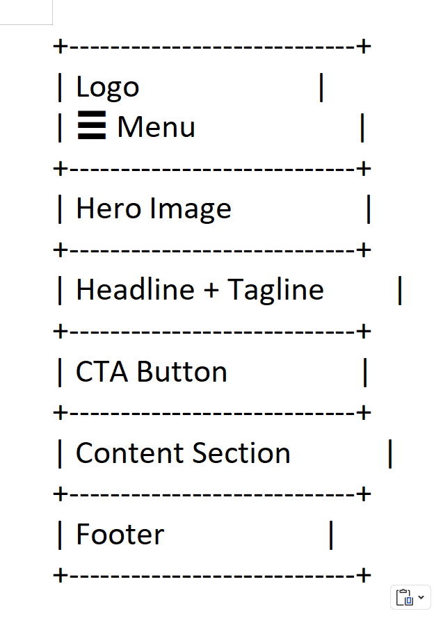
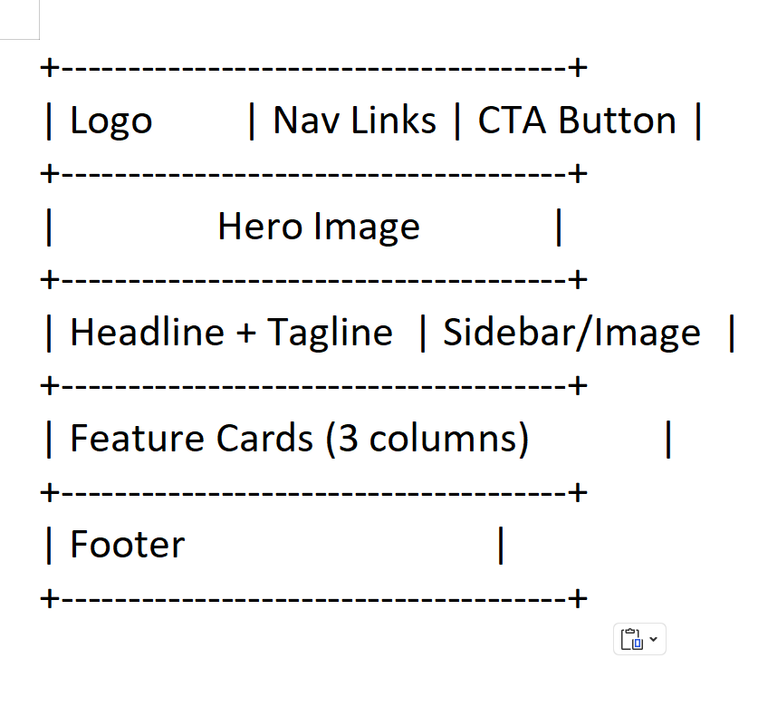

Site Name
Japan Uncharted
The name Japan Uncharted was chosen to evoke adventure, curiosity, and exploration. It suggests discovering Japan beyond common tourist paths, inviting users to experience its cities, food, culture, and events in a fresh and exciting way.
Optional domain availability: japan-uncharted.com
Site Purpose
The purpose of Japan Uncharted is to inspire and guide users who dream of traveling to Japan by offering engaging, easy-to-navigate information about destinations, cuisine, and cultural events. The site focuses on adventure-driven discovery, highlighting places like Tokyo and Okinawa, iconic Japanese foods, and exciting pop culture experiences such as comic conventions. Interactive elements will make the site fun to use while helping users imagine and plan their own journey to Japan.
Scenarios
- I want an exciting first trip to Japan — which cities and places should I explore beyond the basics?
- What Japanese foods should I experience to truly understand the culture?
- Are there fun pop culture events or conventions I can attend during my visit?
Color Scheme
The following colors reflect Japanese aesthetics while maintaining readability and accessibility.
Typography
- Poppins – Used for headings and titles.
- Roboto – Used for body text and paragraphs.
Wireframes
These wireframes represent the layout structure for the Japan Uncharted homepage on mobile and desktop devices.
Mobile View

Desktop View

Testing Plan
This document will be tested using HTML and CSS validators, browser developer tools, Lighthouse audits, and accessibility checks to ensure compliance with best practices, color contrast standards, SEO, and performance guidelines.